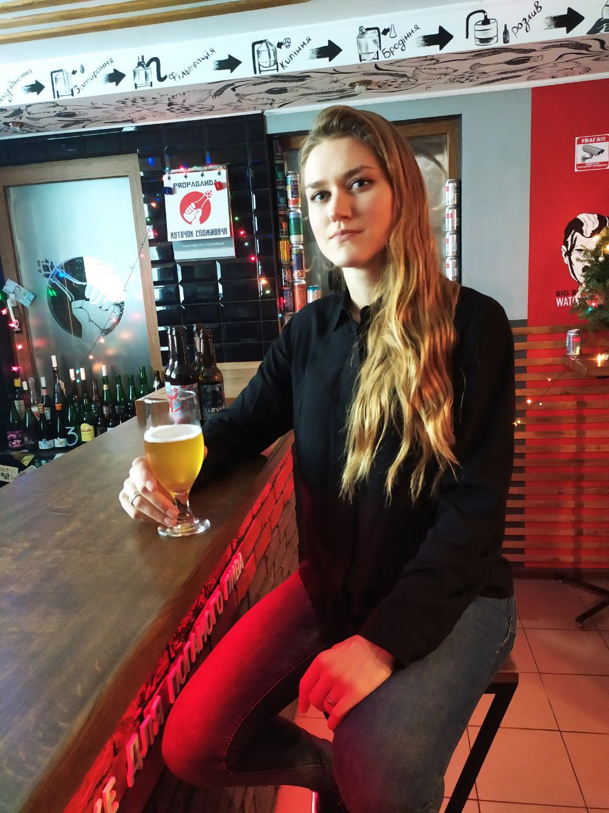

Vinnytsia city, Ukraine
T:+380993910868
e-mail: andrushenko.yo@gmail.com
LinkedIn
Facebook
| Education | (2015 - 2020) - Vinnytsia National Technical University, Faculty of Information Technology and Computer Engineering, specialty "Computer Science" December 2019 - JavaScript Tutorial Course (SoloLearn) |
|---|---|
| Professional Knowledge | Basic knowledge of HTML, CSS, JavaScript, simple web pages creation. Knowledge of network protocols - HTTP / HTTPS / TCP / UDP. Good understanding of Software Development lifecycle. Practical experience in testing the functionality of web sites and web applications. Functional/non functional testing, cross-platform and cross-browsing testing, UI/UX testing. Issue tracking system – Jira, Trello. |
| Summary of skills |
|
| Expirience |
Viseven Company Position: QA Engineer Oct 2019 - Present |
| Responsibilities |
|
| Languages | Ukrainian - native, English - B1 |
| Other | Hobbies - music, cycling, reading, outdoor activities. I want to translate the knowledge acquired in the process of learning into practical activity. |
| Link to completed work | Project 1 Project 2 Project 3 |